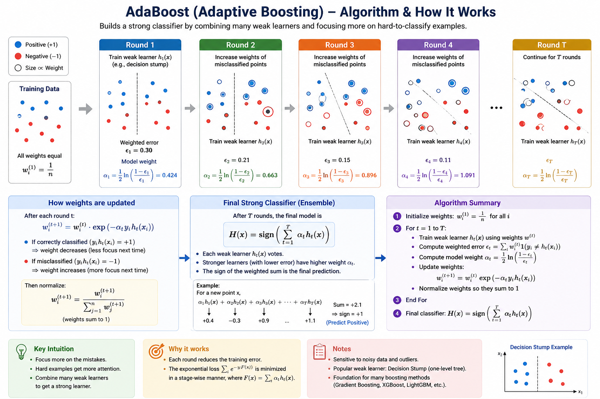

Introduction
AdaBoost (Adaptive Boosting) is a sequential ensemble method that combines many weak learners (typically shallow decision trees) into a strong classifier by focusing more and more on the hard-to-classify points.
What makes it Adaptive?
Instead of training all models on the same data, AdaBoost:
- Starts with equal weights for all data points.
- Trains a weak learner (e.g., a decision stump — a tree with one split).
- Increases the weights of misclassified points.
- Trains the next learner to focus on those difficult points.
- Repeats for a fixed number of iterations or until performance stops improving.
Why "Weak" Learners?
AdaBoost works with models that are only slightly better than random guessing (e.g., error rate < 50% on binary classification). The power comes from the ensemble, not the individual learners. Each tree corrects the mistakes of the previous ones.
The Boosting Process
Imagine a dataset of 10 data points. AdaBoost goes through these steps:
- Step 1: Train the first tree. Let's say it correctly classifies 7 points but misclassifies 3.
- Step 2: Increase the weights of the 3 misclassified points.
- Step 3: Train the second tree, forcing it to focus more on those 3 points. It might correctly classify 2 of them, but misclassify 1.
- Step 4: Increase the weight of the remaining misclassified point.
- Step 5: Train the third tree to focus on that last point.
- Final Model: Combine all 3 trees with different weights (the ones that performed better get higher weights).
AdaBoost Algorithm Steps
Here's the step-by-step breakdown of the AdaBoost algorithm:
- Initialize Weights: Start with equal weights for all data points:
- Loop for T Iterations:
- Train Weak Learner: Train a weak learner (e.g., decision stump) on the current weighted data.
- Calculate Weighted Error: Calculate the weighted error rate of the learner.
- Calculate Learner Weight: Calculate the weight for this learner (more error = lower weight).
- Update Data Weights: Increase weights for misclassified points, decrease for correctly classified points.
- Normalize Weights: Rescale weights so they sum to 1.
- Final Prediction: Combine all learners using their weights (weighted majority vote for classification, weighted sum for regression).
AdaBoost Mathematics (for the curious mind)
Here are the core formulas used in AdaBoost:
The larger \(\alpha_t\), the more weight is given to the learner.
where \(Z_t\) is the normalization factor to ensure weights sum to 1.
Step-by-Step Algorithm
- Step 1: Initialize weights: Initially, all data points are equally important: $$w_i^{(1)} = \frac{1}{n}$$
- Step 2: Train weak learner: Train a weak classifier \(h_t(x)\) using the weighted dataset. The learner focus more on points with higher weights.
- Step 3: Compute weighted error: $$\epsilon_t = \sum_{i=1}^n w_i^{(t)} \cdot I(y_i \neq h_t(x_i))$$ This is not simple accuracy, it's weighted error.
- Step 4: Compute model weight:
$$\alpha_t = \frac{1}{2} \ln \left( \frac{1 - \epsilon_t}{\epsilon_t} \right)$$
Interpretation:
- If error is small \(\rightarrow \alpha_t\) is large \(\rightarrow\) strong learner
- If error is \(\sim 0.5 \rightarrow \alpha_t \approx 0 \rightarrow\) useless learner
- If error is close to 1 \(\rightarrow \alpha_t \approx -\infty \rightarrow\) overfitting - giving more weight to the mistakes.
- Step 5: Update sample weights:
$$w_i^{(t+1)} = w_i^{(t)} \cdot \exp\left(-\alpha_t y_i h_t(x_i)\right)$$
This is the key idea:
- If correctly classfied \(\rightarrow y_i h_t(x_i) = +1 \rightarrow \) weight decreases.
- If misclassified \(\rightarrow y_i h_t(x_i) = -1 \rightarrow \) weight increases.
- Step 6: Normalize weights: $$w_i^{(t+1)} = \frac{w_i^{(t+1)}}{\sum_{j=1}^n w_j^{(t+1)}}$$ so weights remain a probability distribution.
- Step 7: Repeat until desired accuracy or max iterations reached.
- Step 8: Final prediction:
$$y_{final}(x) = \text{sign} \left( \sum_{t=1}^{T} \alpha_t h_t(x) \right)$$
so:
- Each weak learner votes
- Stronger learners (low error) get higher weights
- Final prediction is weighted majority vote
- Step 6: Intuition Behind the Math:
Why exponential update?
The term: \(\exp(-\alpha_t y_i h_t(x_i))\)
creates:
- smooth penalty
- stronger updates for misclassified points
- connections to exponential loss minimization
AdaBoost minimizes this loss:
$$\sum_{i=1}^n \exp\left(-y_i F(x_i)\right)$$ where $F(x)$ is the final predictor and is given by \(F(x) =\sum_{t=1}^T \alpha_t h_t(x)\). So AdaBoost is actually doing stage-wise additive modeling.

References & Further Reading
- Friedman, J. H. (2001). Greedy Function Approximation: A Gradient Boosting Machine. The Annals of Statistics, 29(5), 1189–1232.
- Friedman, J. H. (1999). Stochastic Gradient Boosting. Computational Statistics & Data Analysis.
- Chen, T., & Guestrin, C. (2016). XGBoost: A Scalable Tree Boosting System. Proc. 22nd ACM SIGKDD.
- Ke, G., et al. (2017). LightGBM: A Highly Efficient Gradient Boosting Decision Tree. Advances in Neural Information Processing Systems (NeurIPS).
- Prokhorenkova, L., et al. (2018). CatBoost: Unbiased Boosting with Categorical Features. NeurIPS.
- Freund, Y., & Schapire, R. E. (1997). A Decision-Theoretic Generalization of On-Line Learning. JCSS, 55(1), 119–139.
- The Elements of Statistical Learning — Chapter 10: Boosting and Additive Trees.
- My GitHub: Machine Learning repository